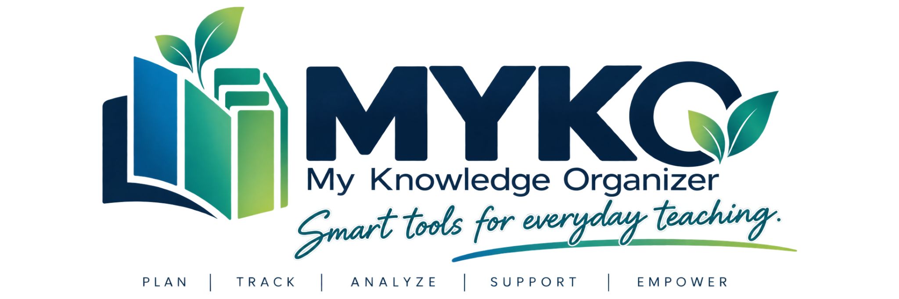

MYKO Teacher Tools
Smart tools for everyday teaching.
Open Teacher Workspace ↗Install MYKO from this GitHub page to get the MYKO icon, not the Google Apps Script icon.
Internet is required for the teacher workspace. The installed MYKO launcher opens your existing Google Apps Script workspace.